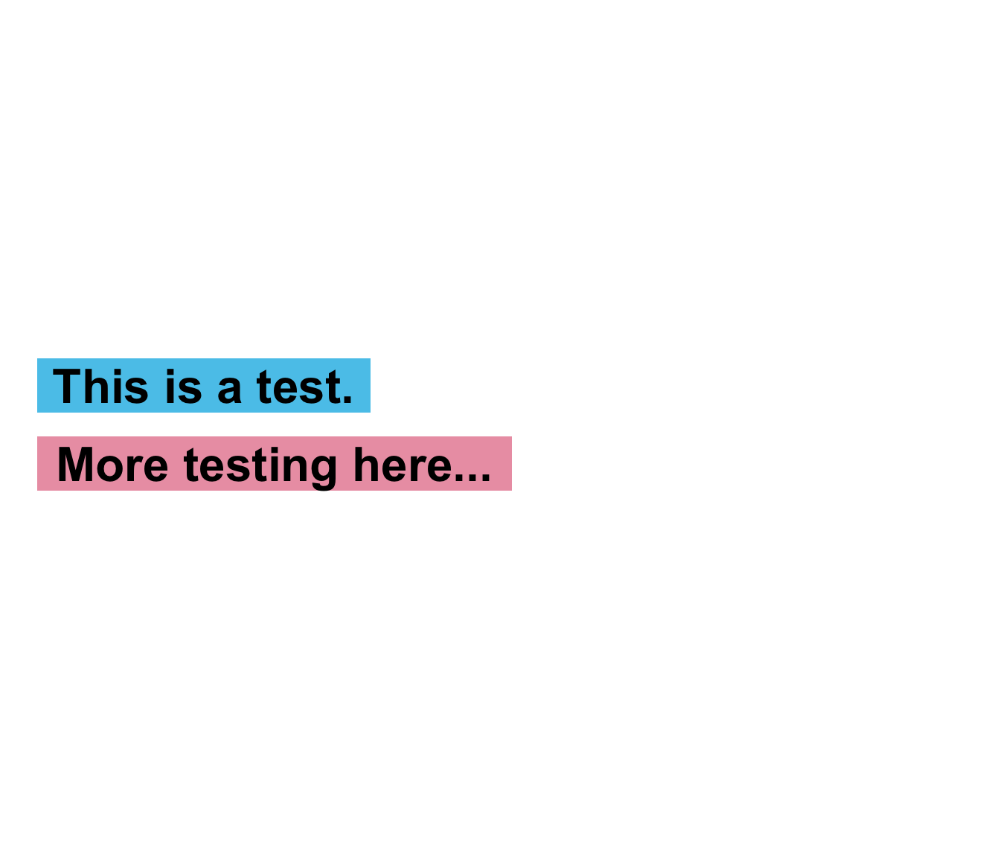
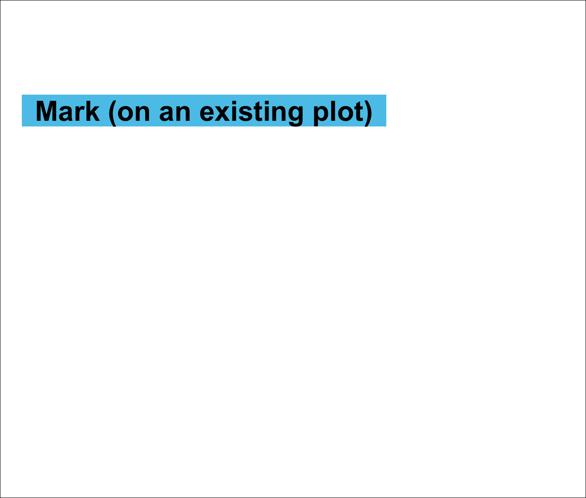
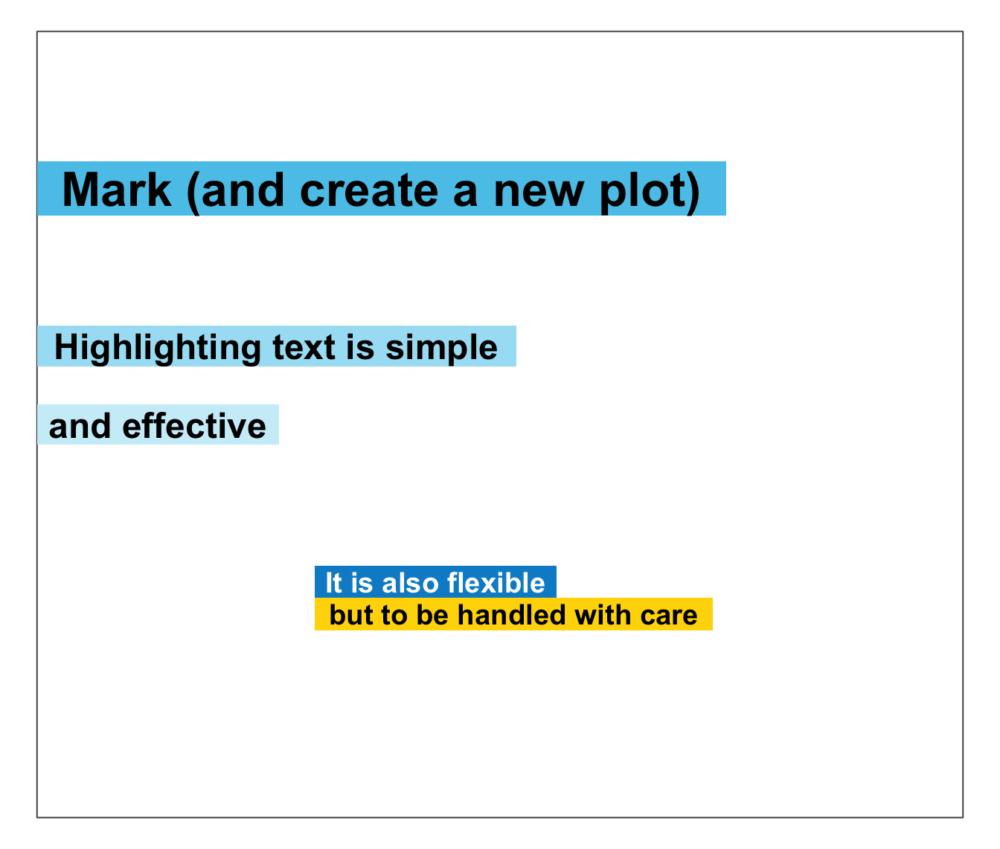
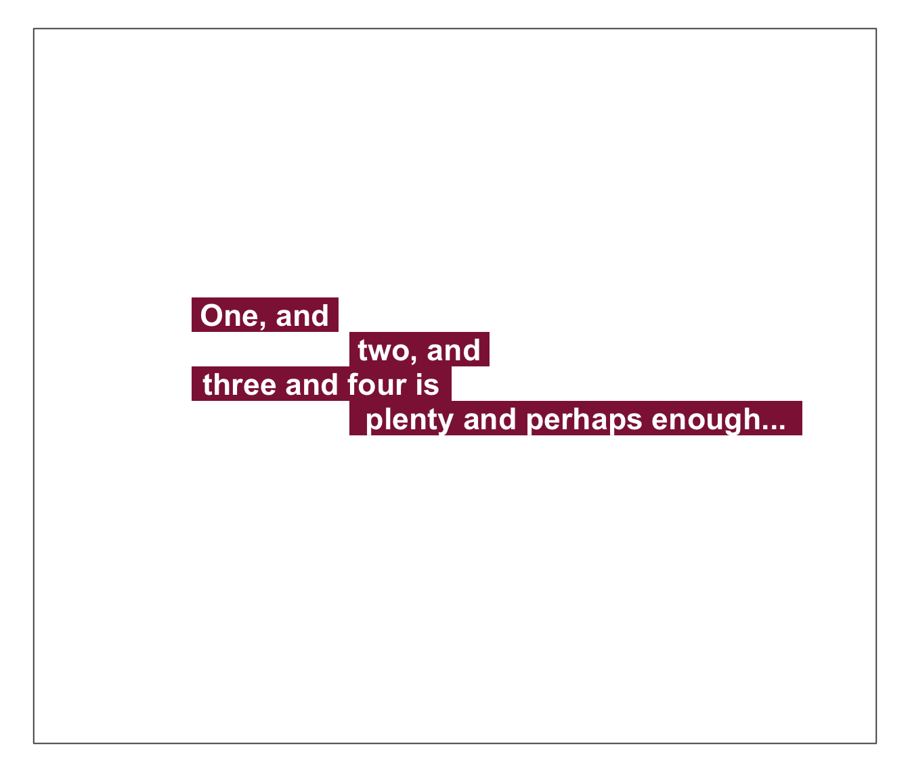
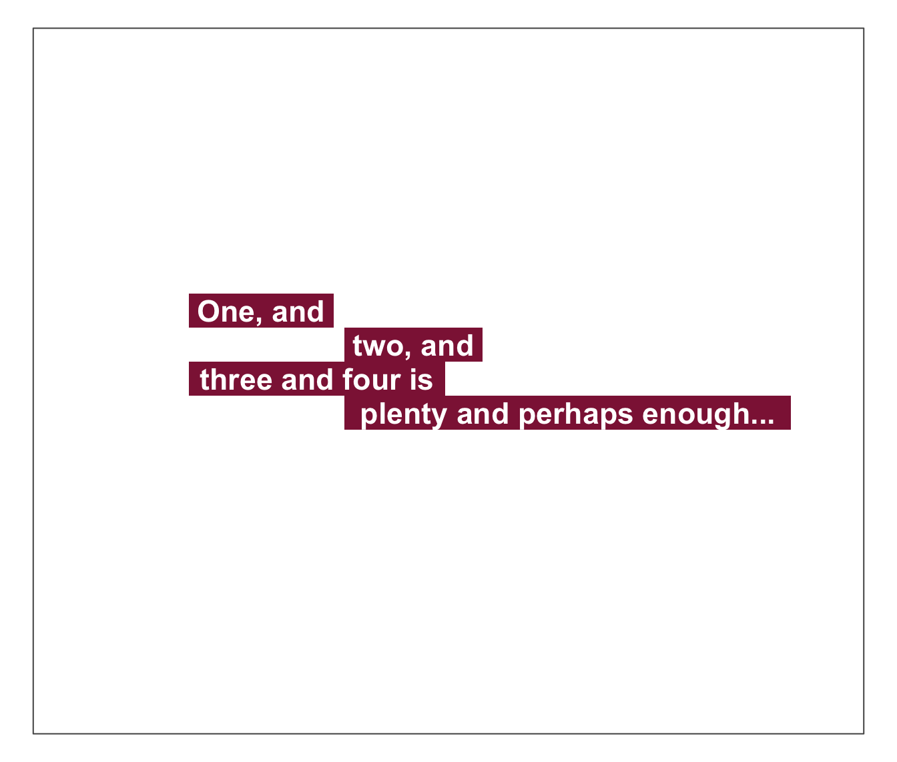

mark plots 1 or more text strings (provided as a character vector labels)
to an (existing or new) plot and places a colored box behind
each label to mark it (i.e., highlight or make it stand out from the background).
mark(
labels,
x = 0,
y = 0.55,
x_layout = NA,
y_layout = "even",
col = "black",
col_bg = Seeblau,
cex = 2,
font = 2,
new_plot = "none"
)A character vector specifying the text labels to be plotted.
A numeric vector of x-coordinates at which the
text labels in labels should be written.
If the lengths of x and y differ,
the shorter one is recycled.
Default: x = 0.
A numeric vector of y-coordinates at which the
text labels in labels should be written.
If the lengths of x and y differ,
the shorter one is recycled.
Default: y = .55.
An optional numeric vector or character string
to control the horizontal positions of labels.
Numeric values are interpreted as increments to values of x
and recycled (to enable stepwise or alternating patterns).
3 character string options are:
"center" (i.e., center wrt. first label or plot center),
"left" (i.e., left wrt. first label or plot center),
"right" (i.e., right wrt. first label or plot center).
Default: x_layout = NA (i.e., using values of x).
A numeric value or character string
to control the vertical positions of labels.
Numeric values are interpreted as increments to values of y[1]
and recycled (to enable stepwise or alternating patterns).
2 character string options are:
"even" (i.e., even distribution of labels across available y-space) and
"flush" (i.e., no space between adjacent labels, i.e., y_layout = 0).
Default: y_layout = "even".
The color(s) of the text label(s).
Default: col_lbl = "black".
The color(s) to highlight or fill the rectangle(s) with.
Default: col_bg = Seeblau.
Numeric character expansion factor(s),
multiplied by par("cex") to yield the character size(s).
Default: cex = 2.
The font type(s) to be used.
Default: font = 2 (i.e., bold).
Should a new plot be generated?
Set to "blank" or "slide" to create a new plot.
Default: new_plot = "none" (i.e., add to an existing plot).
The positions of the text elements in labels can be specified by
providing their coordinates (as x and y arguments) or
by providing an initial position and an y_layout (see below).
Text formatting parameters (like col, col_bg, cex, font)
are recycled to match length(labels).
mark uses the base graphics system graphics::.
# Basics:
mark(labels = "This is a test.", new_plot = "blank") # create a new blank plot
mark(labels = "More testing here...", y = .45, col_bg = pal_pinky[[2]]) # add to plot

# Example:
# (a) Mark text on an existing plot:
plot(x = 0, y = 0, type = "n", xlim = c(0, 1), ylim = c(0, 1), xlab = "", ylab = "")
mark(x = 0, y = .8, labels = "Mark (on an existing plot)") # uses existing plot

# (b) Mark text on a new plot:
mark(x = 0, y = .8, labels = "Mark (and create a new plot)",
new_plot = "slide") # starts a new plot
# (c) More text and decorations:
mark(x = 0, y = c(.60, .50),
labels = c("Highlighting text is simple", "and effective"),
cex = 1.5, col_bg = c(pal_seeblau[[2]], pal_seeblau[[1]]))
mark(labels = c("It is also flexible", "but to be handled with care"),
x = .4, y = .3, y_layout = "flush", cex = 1.2,
col = c("white", "black"), col_bg = c(pal_seeblau[[5]], "gold"))

# Using x_layout and y_layout:
mark(labels = c("Ene,", "mene, miste,", "es rappelt", "in der Kiste."),
cex = 1.4, font = 2, col = "white", col_bg = Petrol,
x = NA, y = .85, x_layout = "center", y_layout = "even", new_plot = "slide")

mark(labels = c("One, and", "two, and", "three and four is", "plenty and perhaps enough..."),
cex = 1.4, font = 2, col = "white", col_bg = Bordeaux,
x = .5, y = .6, x_layout = c(-.25, +.25), y_layout = 0, new_plot = "slide")
